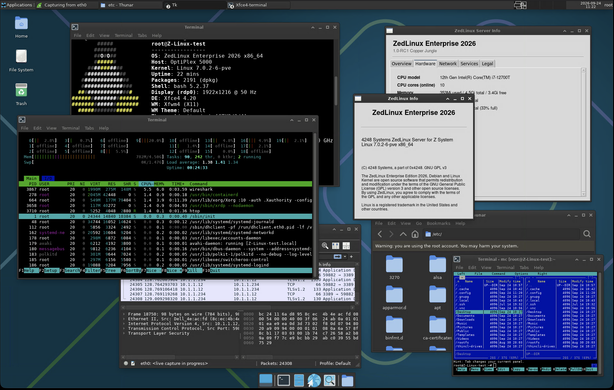
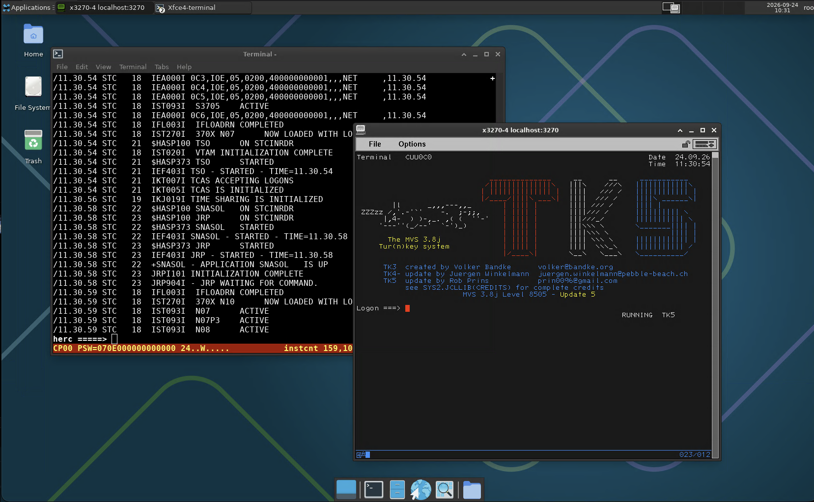

This is power, unleashed.
A Linux® Operating System, built on top of Debian with all the features that makes it ready for anything*
Comming soon to GitHub®
Officially releasing to the public.
ZedLinux is an overlay install script that transforms a pre-installed Debian system into a powerful server or workstation operating system. Rather than shipping a new distro image, ZedLinux layers a curated toolkit, configuration set, and rebranding on top of a stock Debian base.
No need to hassle with multiple installation, complex guides, or dependency management. ZedLinux asks you some questions and away it goes, setting up your system automatically.
ZedLinux provides an option to choose between a graphical user interface (GUI) or a text-based user interface (TUI) for system administration, allowing for GUI management programs as well as terminal-based tools to be used according to user preference.


ZedLinux provides the necessary tools and environment to maintain and develop legacy COBOL and REXX applications seamlessly. Using Hercules mainframe emulator along with the included terminal emulators, you can run and test your legacy applications as if you were on the original hardware.
ZedLinux ships with a curated toolkit spanning languages, desktop tools, virtualization, networking, and security.
Python 3, C/C++, COBOL (GnuCOBOL 4), Fortran, Pascal, plus Make, CMake, Ninja, Autoconf, Automake, Bison, Flex and scientific libraries like NumPy, SciPy, Pandas, BLAS and LAPACK.
XFCE Desktop Environment, Firefox ESR, VLC / mpv, GParted, GNOME Disk Utility and Timeshift system snapshots.
xrdp, TigerVNC, Remmina, Cockpit web admin console, plus KVM, QEMU, Virt-Manager, Docker and libvirt.
MVS TK5 mainframe emulator with x3270 / c3270 terminal emulators for legacy Z System workflows.
Nmap, Masscan, arp-scan, Netdiscover, iperf3, mtr, traceroute, ethtool, plus bandwidth and system monitoring utilities.
UFW firewall, fail2ban intrusion prevention and OpenSSH client & server, hardened out of the box.